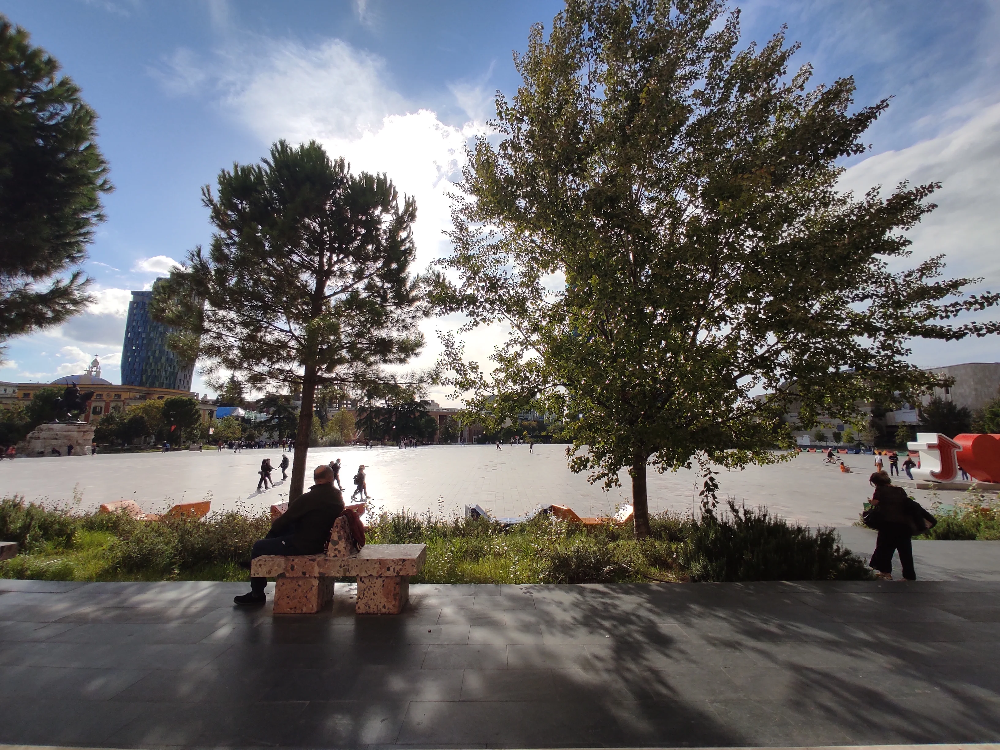

Albania was the proof of how exhausting a system led by ideology can be, despite intentions that can sometimes be seen as good, at least on paper. I found Albanians in general very welcoming and curious people, grateful and proud of their own country, a country that has seen a lot in recent years. Communism was something that Albanian people have to deal with on a daily base. The rulers were looking for protection and support from other countries in the communist world and as soon as those countries were seen as "not communist enough" (Russia), they were dropping them and move closer to the "most communist" one (China).
The paranoid communist leader Hoxha, when he decided to build bunkers for a potential imminent invasion of neighboring countries, left to travellers one of the most interesting thing to do in Tirana, the visit of BUNK'ART. Apart from that I spent a lot of time sitting in front of the Adrion Bookstore in Skanderbeg Square, the local hero who fought against the Ottoman Empire.
Albania nowadays is quickly moving towards the west, despite of the fact that it still receives a lot of economical help from the Chinese government that obviously wouldn't mind to have a friend in Europe. People are willing to improve their life standards and the globalisation as usual, will make a new rich group of people, leaving aside the rest of the population.
Albanian is an Indo-european language that belongs to the Paleo-balkans group.